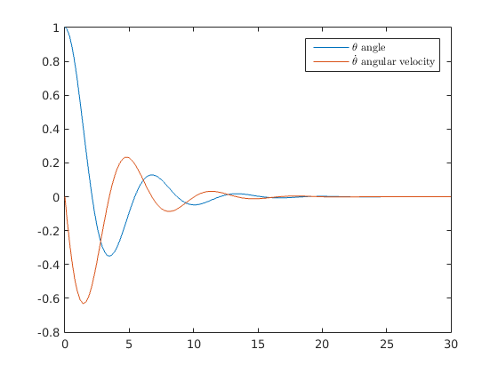
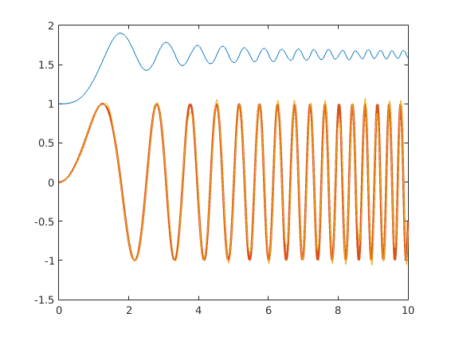

file: anal3_7het_potlas.m author: Polcz Péter <ppolcz@gmail.com>
Created on 2016.11.14. Monday, 11:57:37
Contents
- Documentation
- Vektoranalizis - divergencia (divergence)
- Vektoranalizis - rotacio (curl)
- Vektoranalizis - gradiens (gradient)
- Vektoranalizis - Jacobi matrix (jacobian)
- Vektoranalizis - Laplace operator (laplacian), Hesse matrix (hessian)
- Vektoranalizis - Potencialfuggvenyek kiszamitasa
- Matlab - function handle - szimbolikus objektum
- Matlab symbolikus fuggvenybol fuggveny handle
- Szimbolikus integralas
- Numerikus integralas - ode45-el
- Numerikus határozott integrálás adott intervallumon (integral függvénnyel)
- Szimbolikus számok kezelése
- Numerikus kettős integrálás normál tartományon (integral2 függvénnyel)
- Szimbolikus (határozott vagy határozatlan) integrálás csak az egyik valtozó szerint
Documentation
web(fullfile(docroot, 'symbolic/vector-analysis.html'))
Vektoranalizis - divergencia (divergence)
clc fprintf '\n[1] Vektoranalizis - divergencia (divergence)\n\n\n' x = sym('x',[5,1], 'real') F = round(rand(5)) * x + (sin(round(rand(5)*0.6) * x)) fprintf '`divergence(F,x)` = \n' disp(divergence(F,x)) fprintf 'a `curl` csak 3 dimenzios fuggvenyekre mukodik: \ncurl(F(1:3),x(1:3)) = \n' disp(curl(F(1:3),x(1:3)))
[1] Vektoranalizis - divergencia (divergence)
x =
x1
x2
x3
x4
x5
F =
x1 + x3 + x5
x2 + x4 + x5 + sin(x4)
x1 + x3 + x5 + sin(x5)
sin(x1)
x3 + x5
`divergence(F,x)` =
4
a `curl` csak 3 dimenzios fuggvenyekre mukodik:
curl(F(1:3),x(1:3)) =
0
0
0
Vektoranalizis - rotacio (curl)
clc fprintf '\n[2] Vektoranalizis - rotacio (curl)\n\n\n' syms x y z real F = [ sin(x)*cos(y) + z^2 exp(z)*x x*y / (x^2 + 1) ]; disp 'curl(F) = ' disp(curl(F)) disp 'pretty(curl(F)) = ' pretty(curl(F)) disp 'curl(F,[z;x;y]) = ' disp(curl(F,[z;x;y]))
[2] Vektoranalizis - rotacio (curl)
curl(F) =
x/(x^2 + 1) - x*exp(z)
2*z - y/(x^2 + 1) + (2*x^2*y)/(x^2 + 1)^2
exp(z) + sin(x)*sin(y)
pretty(curl(F)) =
/ x \
| ------ - x exp(z) |
| 2 |
| x + 1 |
| |
| 2 |
| y 2 x y |
| 2 z - ------ + --------- |
| 2 2 2 |
| x + 1 (x + 1) |
| |
\ exp(z) + sin(x) sin(y) /
curl(F,[z;x;y]) =
y/(x^2 + 1) - (2*x^2*y)/(x^2 + 1)^2
-sin(x)*sin(y)
x*exp(z) - cos(x)*cos(y)
Vektoranalizis - gradiens (gradient)
clc fprintf '\n[3] Vektoranalizis - gradiens (gradient)\n\n\n' syms x1 x2 x3 x4 x5 real x = [x1;x2;x3;x4;x5]; f = x' * round(rand(5)) * x; disp 'f = x'' * round(rand(5)) * x = ' disp(f) f = expand(f); disp 'expand(f) = ' disp(f) disp 'gradient(f) = ' disp(gradient(f)) disp 'gradient(f,x) = ' disp(gradient(f,x)) disp 'gradient(f,[x1;x5;x2]) = ' disp(gradient(f,[x1;x5;x2]))
[3] Vektoranalizis - gradiens (gradient)
f = x' * round(rand(5)) * x =
x4*(x4 + x5) + x1*x3 + x2*(x1 + x2 + x3 + x4 + x5) + x1*(x2 + x3 + x5) + x5*(x1 + x2 + x3)
expand(f) =
2*x1*x2 + 2*x1*x3 + x2*x3 + 2*x1*x5 + x2*x4 + 2*x2*x5 + x3*x5 + x4*x5 + x2^2 + x4^2
gradient(f) =
2*x2 + 2*x3 + 2*x5
2*x1 + 2*x2 + x3 + x4 + 2*x5
2*x1 + x2 + x5
x2 + 2*x4 + x5
2*x1 + 2*x2 + x3 + x4
gradient(f,x) =
2*x2 + 2*x3 + 2*x5
2*x1 + 2*x2 + x3 + x4 + 2*x5
2*x1 + x2 + x5
x2 + 2*x4 + x5
2*x1 + 2*x2 + x3 + x4
gradient(f,[x1;x5;x2]) =
2*x2 + 2*x3 + 2*x5
2*x1 + 2*x2 + x3 + x4
2*x1 + 2*x2 + x3 + x4 + 2*x5
Vektoranalizis - Jacobi matrix (jacobian)
clc fprintf '\n[4] Vektoranalizis - Jacobi matrix (jacobian)\n\n\n' syms x1 x2 x3 x4 x5 u v w real x = [x1;x2;x3;x4;x5]; F = [ x2^2 + sin(x1)*x4 x3 + cos(x2) + u*x1 exp(x2)*sin(x1) ]; disp 'F(x1,x2,x3,x4;u) = ' pretty(F) disp 'jacobian(F) = ' disp(jacobian(F)) fprintf 'E szerint tortenik a gradiens szamolas, ha nem adjuk meg explicite mi szerint szamolja a gradienst: ' fprintf '`symvar(F)` = ' disp(symvar(F)) fprintf 'Tehat `jacobian(F)` == `jacobian(F,symvar(F))`\n\n' disp 'jacobian(F,x) = ' disp(jacobian(F,x)) disp 'jacobian(F,[x;u;v;w]) = ' disp(jacobian(F,[x;u;v;w]))
[4] Vektoranalizis - Jacobi matrix (jacobian) F(x1,x2,x3,x4;u) = / 2 \ | x2 + x4 sin(x1) | | | | x3 + cos(x2) + u x1 | | | \ exp(x2) sin(x1) / jacobian(F) = [ 0, x4*cos(x1), 2*x2, 0, sin(x1)] [ x1, u, -sin(x2), 1, 0] [ 0, exp(x2)*cos(x1), exp(x2)*sin(x1), 0, 0] E szerint tortenik a gradiens szamolas, ha nem adjuk meg explicite mi szerint szamolja a gradienst: `symvar(F)` = [ u, x1, x2, x3, x4] Tehat `jacobian(F)` == `jacobian(F,symvar(F))` jacobian(F,x) = [ x4*cos(x1), 2*x2, 0, sin(x1), 0] [ u, -sin(x2), 1, 0, 0] [ exp(x2)*cos(x1), exp(x2)*sin(x1), 0, 0, 0] jacobian(F,[x;u;v;w]) = [ x4*cos(x1), 2*x2, 0, sin(x1), 0, 0, 0, 0] [ u, -sin(x2), 1, 0, 0, x1, 0, 0] [ exp(x2)*cos(x1), exp(x2)*sin(x1), 0, 0, 0, 0, 0, 0]
Vektoranalizis - Laplace operator (laplacian), Hesse matrix (hessian)
clc fprintf '\n[5] Vektoranalizis - Laplace operator (laplacian), Hesse matrix (hessian)\n\n\n' syms x y z real r = [x;y;z]; f = simplify([sin(x) exp(z)] * round(rand(2,3)*0.7) * r + sin(x)^2); disp 'f = simplify([sin(x) exp(z)] * round(rand(2,3)*0.7) * r + sin(x)^2) = ' disp(f) disp 'pretty(f) = ' pretty(f) Lf = laplacian(f,r); disp 'Lf = laplacian(f) = ' disp(Lf) Lf = simplify(Lf); disp 'simplify(Lf) = ' disp(Lf) ddf = simplify(hessian(f,r)); disp 'ddf = simplify(hessian(f)) = ' disp(ddf)
[5] Vektoranalizis - Laplace operator (laplacian), Hesse matrix (hessian) f = simplify([sin(x) exp(z)] * round(rand(2,3)*0.7) * r + sin(x)^2) = sin(x)*(z + sin(x)) pretty(f) = sin(x) (z + sin(x)) Lf = laplacian(f) = 2*cos(x)^2 - sin(x)*(z + sin(x)) - sin(x)^2 simplify(Lf) = 2 - z*sin(x) - 4*sin(x)^2 ddf = simplify(hessian(f)) = [ 2 - z*sin(x) - 4*sin(x)^2, 0, cos(x)] [ 0, 0, 0] [ cos(x), 0, 0]
Vektoranalizis - Potencialfuggvenyek kiszamitasa
clc fprintf '\n[6] Vektoranalizis - Potencialfuggvenyek kiszamitasa\n\n\n' syms x y z real r = [x;y;z]; F = [ y*z + 1 + y + cos(z)*sin(x) x*z + x x*y + sin(z)*cos(x) ]; disp 'F(x,y,z) = ' disp(F) disp 'potential(F,r) [ha letezik potencialfuggveny] = ' disp(potential(F,r)) F = [ z 0 0 ]; fprintf 'F(x,y,z) = ' disp(F') disp 'potential(F,r) [ha letezik potencialfuggveny] = ' disp(potential(F,r))
[6] Vektoranalizis - Potencialfuggvenyek kiszamitasa
F(x,y,z) =
y + cos(z)*sin(x) + y*z + 1
x + x*z
cos(x)*sin(z) + x*y
potential(F,r) [ha letezik potencialfuggveny] =
x - cos(x)*cos(z) + x*y + x*y*z
F(x,y,z) = [ z, 0, 0]
potential(F,r) [ha letezik potencialfuggveny] =
NaN
Matlab - function handle - szimbolikus objektum
clc fprintf 'Adott egy fuggveny handle: f = ' f = @(t,x) [ x(2) -sin(x(1)) - 0.6*x(2) ]; disp(f) T = 30; [tt,xx] = ode45(f, [0,T], [1;0]); plot(tt,xx), h = legend('$\theta$ angle', '$\dot{\theta}$ angular velocity'); set(h,'Interpreter','latex'); % uj_x = interp1(regi_t, regi_x, uj_t) theta = interp1(tt,xx(:,1),linspace(tt(1),tt(end),T*10)); coordx = sin(theta); coordy = -cos(theta); Szimulaciot_is_akarok = false; if Szimulaciot_is_akarok figure(1); for i = 1:numel(theta) tic plot([0,coordx(i)],[0,coordy(i)], 'linewidth', 4), axis([-2,2,-2,2]) elapsed_time = toc; pause(max(0.01-elapsed_time,0.01)) end end
Adott egy fuggveny handle: f = @(t,x)[x(2);-sin(x(1))-0.6*x(2);]
Matlab symbolikus fuggvenybol fuggveny handle
clc syms t x1 x2 real f_sym = [ x2 -sin(x1) - x2/2 ]; disp('f(x) = ') pretty(f_sym) disp 'matlabFunction(f_sym) [erre nem mukodik az ode45] = ' f_fh1 = matlabFunction(f_sym); disp(f_fh1) disp 'matlabFunction(f_sym, ''vars'', {t, [x1;x2]}) = ' f_fh2 = matlabFunction(f_sym, 'vars', {t, [x1;x2]}); disp(f_fh2) figure, [tt,xx] = ode45(f_fh2, [0,30], [1;0]); plot(tt,xx)
f(x) =
/ x2 \
| |
| x2 |
| - -- - sin(x1) |
\ 2 /
matlabFunction(f_sym) [erre nem mukodik az ode45] =
@(x1,x2)[x2;x2.*(-1.0./2.0)-sin(x1)]
matlabFunction(f_sym, 'vars', {t, [x1;x2]}) =
@(t,in2)[in2(2,:);in2(2,:).*(-1.0./2.0)-sin(in2(1,:))]

Szimbolikus integralas
clc syms a b x y z real f = 1 / ( cos(x)^2 * cot(x)^2); disp 'f(x) = ' pretty(f) F = int(f); fprintf 'F(x) = `int(f)` = \n', pretty(F) fprintf '`rewrite(F,''sincos'')` = \n' pretty(rewrite(F,'sincos')) fprintf '`rewrite(F,''exp'')` = \n' pretty(rewrite(F,'exp'))
f(x) =
1
---------------
2 2
cos(x) cot(x)
F(x) = `int(f)` =
3
tan(x)
-------
3
`rewrite(F,'sincos')` =
3
sin(x)
---------
3
3 cos(x)
`rewrite(F,'exp')` =
3
(exp(x 2i) 1i - i)
- -------------------
3
3 (exp(x 2i) + 1)
Numerikus integralas - ode45-el
T = 10; Ts = 0.01; syms t x real f_sym = sin(t^2); f_fh = matlabFunction(f_sym, 'vars',{t,x}); [t,F] = ode45(f_fh, linspace(0,T,T/Ts), 1); % [t,F] = ode45(f_fh, [0,10], 1); plot(t,F), hold on plot(t,f_fh(t,0),'linewidth',2) plot(t(2:end), diff(F)/Ts)
Numerikus határozott integrálás adott intervallumon (integral függvénnyel)
syms x y real disp 'f(x) = ' f = x^2 + sin(x)^2; disp(f) f_fh = matlabFunction(f); disp 'Az integrál értéke: ' I = integral(f_fh, 2, 3); disp(I) disp 'Számítsuk ki szimbolikusan is. Primitív függvény: `int(f,x)` = F(x) = ' F = int(f,x); disp(F) disp 'F(3) - F(2) = ' II = double(subs(F,x,3) - subs(F,x,2)); disp(II) disp 'Szimbolikusan még egyszerűbben: `int(f,x,2,3) = `' III = int(f,x,2,3); fprintf('%s = %g\n\n', char(III), double(III))
f(x) =
x^2 + sin(x)^2
Az integrál értéke:
6.7140
Számítsuk ki szimbolikusan is. Primitív függvény: `int(f,x)` = F(x) =
x/2 - sin(2*x)/4 + x^3/3
F(3) - F(2) =
6.7140
Szimbolikusan még egyszerűbben: `int(f,x,2,3) = `
sin(4)/4 - sin(6)/4 + 41/6 = 6.71399
Szimbolikus számok kezelése
Egy szimbolikusan megadott számértéket vagy kifejezést a char(...) -el lehet string-é alakítani és double(...)-el lehet kiszámolni a lebegőpontos értékét (ha nincs benne szimbolikus változó)
clc fprintf 'Szimbólikus szám: ' szam = subs(sym(sqrt(5) + sin(x)^2),x,2) + sym(0.6) + subs(sym(tan(x)),x,2); disp(szam) fprintf('Mint string: `char(szam)` = ''%s'', mint lebegőpontos szám: `double(szam)` = %g\n\n', ... char(szam), double(szam)) fprintf 'Szimbólikus szám: ' szam = x^2 + 1; disp(szam) fprintf('Mint string: `char(szam)` = ''%s'', mint lebegőpontos szám: `double(szam)` = ERROR\n\n', ... char(szam))
Szimbólikus szám: tan(2) + 5^(1/2) + sin(2)^2 + 3/5 Mint string: `char(szam)` = 'tan(2) + 5^(1/2) + sin(2)^2 + 3/5', mint lebegőpontos szám: `double(szam)` = 1.47785 Szimbólikus szám: x^2 + 1 Mint string: `char(szam)` = 'x^2 + 1', mint lebegőpontos szám: `double(szam)` = ERROR
Numerikus kettős integrálás normál tartományon (integral2 függvénnyel)
Integráljuk az  függvényt.
függvényt.
Az integrálási tartomány az egységkörlap, vagyis ![$x \in [-1, 1]$](anal3_7het_potlas_eq14779190847463832344.png) ,
,  szerint pedig
szerint pedig ![$y \in [-\sqrt{1-x^2},\sqrt{1-x^2}]$](anal3_7het_potlas_eq06753247104874431148.png)
syms x y real f = x^2 + y^2 + sin(x)^2; f_fh = matlabFunction(f); disp 'A kettős integrál értéke: ' I = integral2(f_fh, -1, 1, @(x) -sqrt(1-x.^2), @(x) sqrt(1-x.^2))
A kettős integrál értéke:
I =
2.2357
Szimbolikus (határozott vagy határozatlan) integrálás csak az egyik valtozó szerint
Számítsuk ki:  -et
-et
syms x y real f = x^2 + y^2 + sin(x)^2; F = int(f,x,2,3)
F = y^2 + sin(4)/4 - sin(6)/4 + 41/6